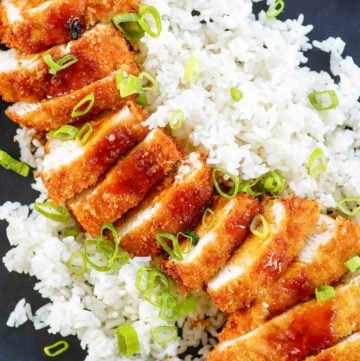

Chicken Katsu

Ingredients
Katsu Sauce
- 1/2 cup ketchup
- 2 tablespoons soy sauce
- 2 teaspoons brown suger
- 1 tablespoon mirin
- 2 teaspoons Worcestershire sauce
- 1 teaspoon freshly grated ginger
- 1 teaspoon finely minced garlic
Chicken Katsu
- 1 pound of boneless skinless chicken breast cut in half horizontally
- salt
- 1 1/2 cups all-purpose flour
- 3 eggs
- 1 1/2 tablespoons water
- 3 cups panko breadcrumbs
- Vegetable oil for cooking
Directions
Katsu Sauce
- Place all of the ingredients in a small bowl, and stir to combine.
- Let the sauce rest at least 30 minutes before serving.
Chicken Katsu
- Place halved chicken breast between some plastic wrap and gently pound out the chicken until it is about ¼ inch thick.
- Salt the chicken liberally, cover, and place in the refrigerator for about 1 hour. This will help the chicken break down and become super juicy. You could omit this step, but the chicken will come out better if you let the chicken rest.
- Set up a breading station with three bowls. Place the all-purpose flour into one bowl. Beat the eggs and 1 1/2 tablespoons of water together very well, and pour into a second bowl. Place the panko breadcrumbs into the third bowl.
- Coat the chicken as follows: Place the chicken into the flour and shake off any excess. Dip into the egg wash, coat well, and shake off any excess. Dredge in the panko breadcrumbs.
- Place the coated chicken on a wire rack.
- Preheat oven to 200°.
- Add enough vegetable oil to coat the bottom ½ inch of either an iron skillet or a stainless steel pan and heat to 350°F. Your pan should be large enough not to overcrowd the chicken.
- Add the chicken to the pan and cook for 1 to 2 minutes, just until the crust sets.
- Flip over and cook for another 1 to 2 minutes.
- Continue cooking the chicken and flipping it over until it is golden brown on both sides.
- Remove the chicken and place on a clean wire rack. Place into the preheated oven to finish cooking. Depending on the thickness of your chicken, the chicken may need another 7 or 8 minutes of cooking. Chicken should be 165 degrees F before consuming.
- When the chicken is fully cooked, cut into thin strips that you can pick up with chopsticks.
- Serve with rice, tonkatsu sauce, or your favorite brown sauce.
Original Recipe
Contact Me
My Email
The University of Montana
32 Campus Dr
Missoula, MT 59812